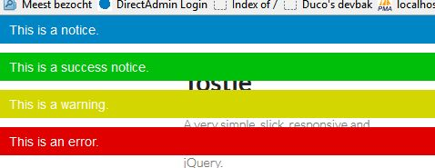

A very simple, slick, responsive and customizable toast message plugin for jQuery.

Tostie is a very simple way to show nice toast notifications in your website. It works great for both normal and responsive websites. Some of the features:
$().tostie({type:"notice", message:"This is a notice."});
$().tostie({type:"notice", message:"This is a slowly appearing and fading toast message.", inOutDuration:3000, inOutType:"fade"});
The properties below are available when you call tostie, with their default values listed.
message: "", // The actual message which should be shown
type: "notice", // The type of the toast message. Can be "success", "notice", "warning" or "error"
toastDuration: 3000, // The number of milliseconds the toast message should be shown
inOutDuration: 300, // The number of milliseconds in which the toast message should be opened and removed
inOutType: "slide", // How the toast message should be shown. Can be "slide" or "fade"
beforeClose: function(){}, // The function which is executed just before closing
afterClose: function(){} // The function which is executed just after closing
Installing the addon is nothing more than including jQuery and jquery.tostie.css and jquery.tostie.js (or jquery.tostie.min.js).
Have fun with tostie! Project by Duco Winterwerp. The plugin is licensed under the MIT License.